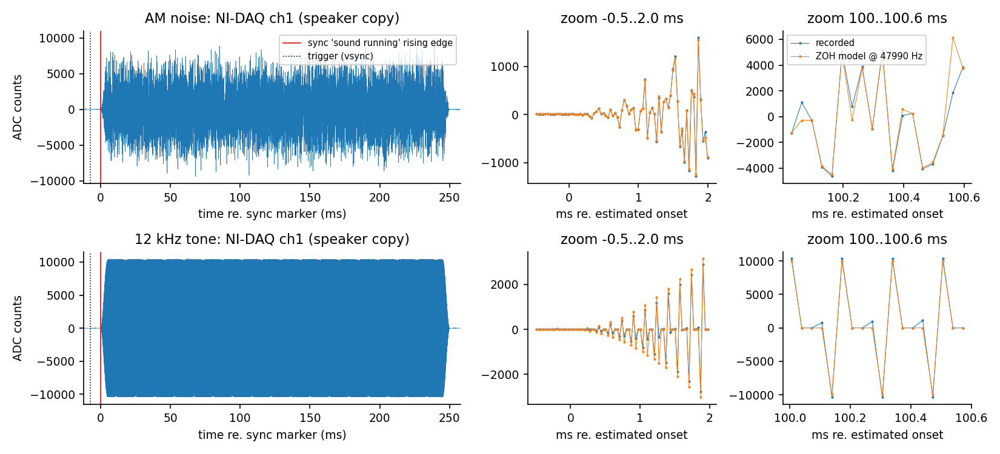
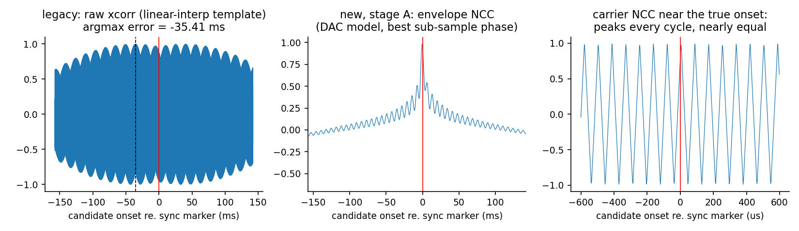
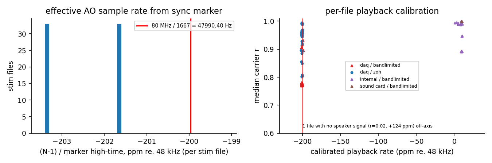
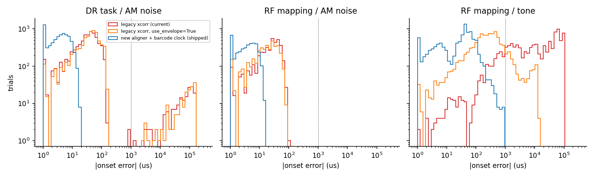
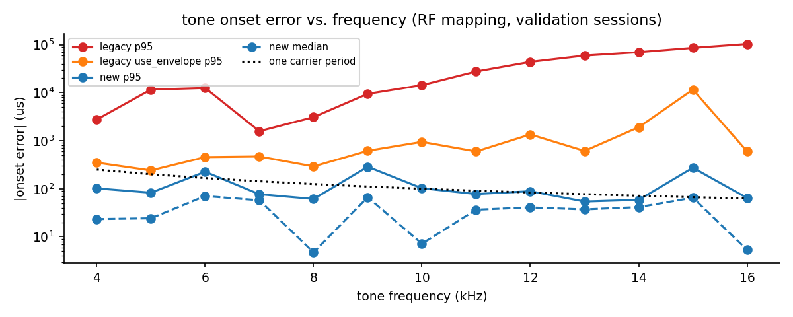
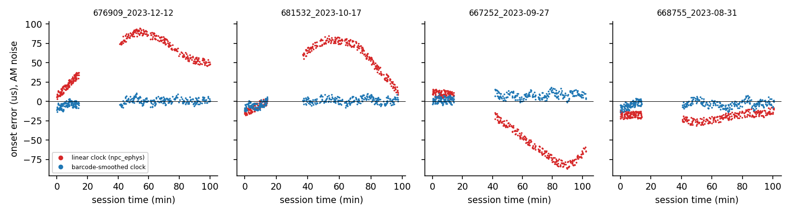
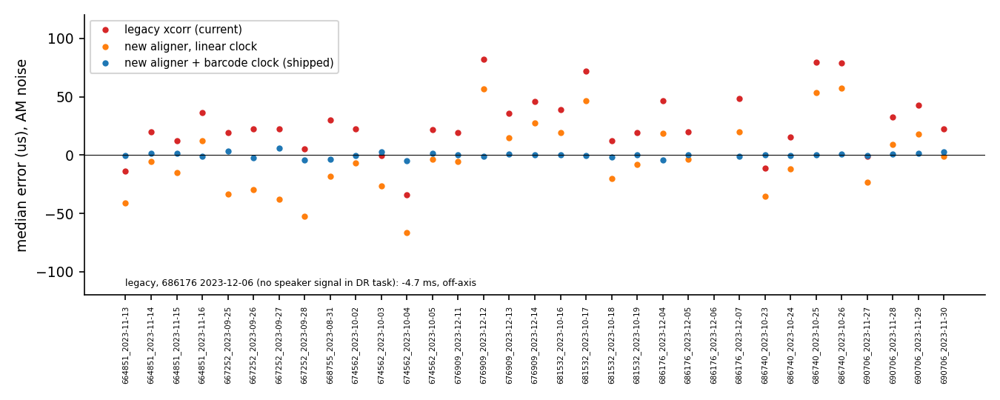
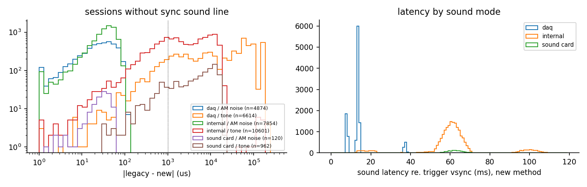

npc_samstim. Validation against the sync "sound running" line, and a replacement for the correlation method. 2026-11-17.
Sessions recorded before 2023-08-31 have no sync line marking sound onset. For these, npc_samstim finds each sound by correlating the ideal waveform with the PXI NI-DAQ recording of the speaker signal (channel 1). Sessions from 2023-08-31 onward have both the NI-DAQ recording and a sync line driven by the same analog-output sample clock as the sound. That makes it possible to measure the error of any NI-DAQ-based method directly.
The comparison used 33 such sessions (2023-08-31 to 2023-12-14; 64 stim files; 21,069 sound trials):
| Stimulus (validation set) | Legacy xcorr: p95 |error| |
Legacy: trials > 1 ms off | New: median |error| | New: p95 |error| | New: max |error| | New: trials > 1 ms off |
|---|---|---|---|---|---|---|
| Task AM noise (n=7,245) | 109 µs | 2.2 % | 3.7 µs | 10.4 µs | 18 µs | 0 (165 rejected as NaN, see §4.3) |
| RF-mapping AM noise (n=3,840) | 59 µs | 0 % | 3.7 µs | 9.8 µs | 16 µs | 0 |
| RF-mapping tones, 4–16 kHz (n=9,984) | 99.7 ms | 85 % | 35 µs | 124 µs | 0.87 ms | 0 |
The main finding is that the legacy method fails on pure tones. On 85 % of tone trials it is more than 1 ms wrong, typically by tens of ms and by up to 105 ms. Its use_envelope=True option is better but still more than 1 ms wrong on 12 % of tones, by up to 13 ms. Noise stimuli were already roughly right, with a +20–30 µs bias and about ±100 µs of slow drift.
On the 55 older sessions (2022-07-26 to 2023-08-30; 96 stim files; 31,027 trials), the new and legacy methods agree to tens of µs for noise. For tones they disagree by more than 1 ms on 69–88 % of trials (by sound mode). This pattern matches the validated legacy failure. In total, 63 older stim files contain tones: every RF-mapping file, plus DR-task sessions that used tones.
The new method, now the default for waveform_type='sound':
The changes are in src/npc_samstim/sound_alignment.py (new) and src/npc_samstim/waveforms.py. Tests are in tests/test_sound_alignment.py, and experiment code in experiments/aud_xcorr/.
soundMode='daq', TaskControl.loadSound writes the sound to AO channel 0 and 5 V to AO channel 1 for every sample but the last, on the same sample clock (TaskControl.py).s3://aind-ephys-data/ecephys_* sessions from 2022-06 onward and kept those with a DynamicRouting1 or RFMapping stim file, a sync file and PXI NI-DAQ data. That gave 90 sessions, all on rig NP3.internal (2022 to Feb 2023) and sound card (May 2023) are sound-card playback. daq (Jul 2023 onward) is NI-DAQ AO playback. All validation sessions are daq mode (see §6).npc_samstim, and NI-DAQ ch1 from 0.2 s before the trigger to 0.35 s after the sound ends. All methods were then compared offline on identical inputs.xcorr matches the library function exactly: max difference 0.0 s on 24 trials from 2 stim files, both raw and use_envelope (experiments/aud_xcorr/results_check_baseline.txt).
Fig. 1. NI-DAQ ch1 for an AM-noise trial and a 12 kHz tone trial, session 668755 2023-08-31. Red: sync marker. Dotted: trigger vsync. Right panels: recorded samples against the ZOH playback model at 47,990 Hz, aligned at the estimated onset (NI-DAQ clock). The tone at 100 ms shows how strongly a 12 kHz tone is aliased at 30 kHz sampling.
The legacy method correlates the NI-DAQ samples with the ideal waveform linearly interpolated to the NI-DAQ rate. It uses non-normalized correlation, integer lags, ±150 ms around the trigger, and the npc_ephys linear clock. Four problems were found.

Fig. 2. A 12 kHz tone trial. Left: legacy correlation over the ±150 ms lag window. Its maximum is 35 ms from the truth. Middle: envelope NCC of the new method, with one clear peak at the truth. Right: carrier NCC near the true onset, at 2 µs resolution, with nearly equal peaks every cycle.
The recorded signal is modelled as the ideal waveform w[n] played at an effective rate f_eff and point-sampled at the NI-DAQ sample times t_k. For an onset τ:
Both models include aliasing, because the template is evaluated at the actual NI-DAQ sample times rather than resampled.
Per stim file, 12 evenly spaced trials are used to choose the reconstruction type and rate. The candidate rates are a ±400 ppm grid in 20 ppm steps, plus the 80 MHz-derived rate, then a 2 ppm refinement with a parabola fitted to the peak. The criterion is the median carrier correlation.
Calibration recovers the physics without using metadata (Fig. 3, right):
| Sound mode | Files | Chosen model | Rate (ppm re. 48 kHz) | Median r |
|---|---|---|---|---|
daq |
101 | ZOH (66), band-limited (35)¹ | −199.1 to −201.7 | 0.78–0.96 |
internal |
58 | band-limited | +0.7 to +10.4 (median +9.5) | 0.99 |
sound card |
3 | band-limited | +9.3 to +10.0 | 1.00 |
¹ Mostly task files (31 of 35). In the one inspected (676909 2023-12-13) the speaker signal is low amplitude (about ±1,000 counts), and these files choose either model with r ≈ 0.78. Timing accuracy on these files is unaffected (§4). One file with no speaker signal calibrated to +123 ppm with r = 0.02 and is rejected trial by trial.

Fig. 3. Left: effective AO rate measured from the sync marker high-time. Right: per-file calibration result and its median correlation.
experiments/aud_xcorr/exp_frac.py output (8 sessions).t_sync(k) = a·k + b + r̃(k). Here (a, b) is a least-squares line through all matched barcodes, about one every 30 s, roughly 200 per session. r̃ is the 9-barcode (about 4.5 min) moving mean of the residuals, linearly interpolated. Each segment uses its local linear timing.
Smoothing windows of 3–15 barcodes and a local-linear variant performed within about 3 µs of each other at p95 (experiments/aud_xcorr/eval_clock.py).
With the barcode clock, AM-noise onsets were a constant +19.7 µs late relative to the marker. Per-session medians were 14.5–25.5 µs over 33 sessions. This is subtracted (NIDAQ_SOUND_ONSET_CORRECTION_SEC = -19.7e-6).
The likely cause is the relative timing of OpenEphys NI-DAQ TTL stamps (used for barcodes) and the analog samples, about half of a 33 µs sample, plus 2–4 µs of analog delay (fitted model delay). The mechanism is not verified. In validation statistics the offset is applied leave-one-session-out, so no session is scored with an offset fitted to itself.
A trial gets latency NaN (NullRecording) if the envelope r is below 0.5, or, for aperiodic sounds, the carrier r is below 0.3.
For accepted validation trials, the 0.1th / 1st percentiles of envelope r are 0.62 / 0.88. For rejected trials the median is 0.06 and the max 0.38. Note that FlexStimRecording.onset_time_on_sync for a NaN latency returns the trigger time (via np.nansum). This is pre-existing behaviour, so callers should check latency.
Full table: tables/validation_summary.csv. The rows below separate the effects of the estimator and of the clock.
| Stimulus | Method | median error (µs) | p50 |e| | p95 |e| | p99 |e| | max |e| | > 1 ms |
|---|---|---|---|---|---|---|---|
| Task AM noise | legacy | +28.8 | 34.6 | 108.8 | 90,224 | 154,860 | 2.2 % |
legacy, use_envelope |
+38.9 | 42.0 | 122.5 | 94,511 | 158,020 | 2.2 % | |
| legacy + barcode clock | +29.2 | 29.7 | 86.9 | 90,190 | 154,889 | 2.2 % | |
| new, linear clock | −2.4 | 23.7 | 79.6 | 90.1 | 102.0 | 0 | |
| new + barcode clock | +1.1 | 3.7 | 10.4 | 13.6 | 18.4 | 0 | |
| RF AM noise | legacy | +25.6 | 25.7 | 58.7 | 72.1 | 95.3 | 0 |
| new, linear clock | −4.4 | 9.8 | 30.7 | 50.0 | 64.0 | 0 | |
| new + barcode clock | −2.5 | 3.7 | 9.8 | 11.9 | 16.3 | 0 | |
| RF tones | legacy | −570 | 11,182 | 99,681 | 102,224 | 104,731 | 85.2 % |
legacy, use_envelope |
+42.6 | 258.9 | 2,279 | 10,350 | 13,298 | 11.9 % | |
| new, linear clock | −4.5 | 35.0 | 126.1 | 277.4 | 857.3 | 0 | |
| new + barcode clock | −2.5 | 35.2 | 123.6 | 278.6 | 867.1 | 0 |

Fig. 4. Distribution of |onset error| in validation sessions, log–log. The dotted line is 1 ms. The legacy task-noise tail above 1 ms comes from the file with no speaker signal (§4.3).

Fig. 5. Tone onset error by frequency. The dotted line is one carrier period.

Fig. 6. AM-noise onset error over session time for 4 sessions, with the npc_ephys linear clock and with the barcode-smoothed clock. The gap is the time between RF mapping and the task.

Fig. 7. Per-session median error for AM noise. The barcode-clock points include the leave-one-session-out offset correction.
| kHz | legacy p95 | legacy > 1 ms | legacy use_envelope p95 |
new median | new p95 | new max |
|---|---|---|---|---|---|---|
| 4 | 2.76 ms | 57 % | 349 µs | 23 µs | 102 µs | 151 µs |
| 5 | 11.6 ms | 88 % | 240 µs | 24 µs | 83 µs | 124 µs |
| 6 | 12.5 ms | 90 % | 455 µs | 70 µs | 225 µs | 335 µs |
| 7 | 1.58 ms | 34 % | 468 µs | 57 µs | 77 µs | 96 µs |
| 8 | 3.09 ms | 65 % | 291 µs | 5 µs | 61 µs | 74 µs |
| 9 | 9.45 ms | 80 % | 615 µs | 66 µs | 286 µs | 681 µs |
| 10 | 14.3 ms | 94 % | 945 µs | 7 µs | 102 µs | 144 µs |
| 11 | 27.5 ms | 100 % | 597 µs | 37 µs | 77 µs | 94 µs |
| 12 | 43.7 ms | 100 % | 1.35 ms | 41 µs | 89 µs | 134 µs |
| 13 | 59.1 ms | 100 % | 612 µs | 37 µs | 54 µs | 91 µs |
| 14 | 69.6 ms | 100 % | 1.91 ms | 41 µs | 59 µs | 115 µs |
| 15 | 85.8 ms | 100 % | 11.5 ms | 65 µs | 273 µs | 867 µs |
| 16 | 103.4 ms | 100 % | 599 µs | 5 µs | 64 µs | 113 µs |
(768 trials per frequency.)
get_stim_latencies_from_nidaq_recording(..., waveform_type='sound') was run on S3 data against get_stim_latencies_from_sync for two sessions. This exercises segment reading, the barcode clock built from the sync file, calibration, alignment and the constant offset. Results are in experiments/aud_xcorr/results/e2e_trials_final.csv.
| Session | Stim | Stimulus | n | NaN | New: median | New: p95 |e| | New: max | Legacy: median | Legacy: p95 |e| |
|---|---|---|---|---|---|---|---|---|---|
| 668755 2023-08-31 | task | AM noise | 233 | 0 | −3.0 µs | 9.7 µs | 13.2 µs | +45.4 µs | 82.0 µs |
| RF | AM noise | 120 | 0 | −4.6 µs | 11.1 µs | 13.7 µs | +19.6 µs | 45.6 µs | |
| RF | tone | 312 | 0 | −4.2 µs | 81.3 µs | 178 µs | −1.24 ms | 102 ms | |
| 676909 2023-12-12 | task | AM noise | 232 | 0 | +0.8 µs | 6.7 µs | 10.9 µs | +95.4 µs | 131 µs |
| RF | AM noise | 120 | 0 | −4.1 µs | 10.7 µs | 13.2 µs | +52.0 µs | 76.2 µs | |
| RF | tone | 312 | 0 | −4.2 µs | 115 µs | 173 µs | +28.8 µs | 99.8 ms |
Wall time per stim file, including S3 reads: 74–178 s for the new method and 101–149 s for legacy. Threaded segment reads offset the extra computation.
All 165 rejected validation trials belong to one file: 686176 2023-12-06, DR task. That session's task spans two NI-DAQ recordings, and the one used (recording1) has no matching speaker signal during the task (envelope r ≈ 0.05). Legacy returned times more than 1 ms wrong for 98.8 % of these trials. Outside that file no validation trial was rejected, and no accepted trial is more than 1 ms off.
In older sessions, 2 trials were rejected (666986 2023-08-14, RF). The recording there contains a different, louder sound overlapping the expected one.

Fig. 8. Left: |legacy − new| onset difference in the 55 older sessions, by sound mode and stimulus. Right: sound latency re. trigger (new method) by sound mode.
| Sound mode | Stimulus | Trials | p50 |legacy − new| | p95 | > 1 ms |
|---|---|---|---|---|---|
daq |
AM noise | 4,874 | 25 µs | 77 µs | 0 % |
daq |
tone | 6,614 | 14.4 ms | 169 ms | 87.6 % |
internal |
AM noise | 7,854 | 35 µs | 70 µs | 0 % |
internal |
tone | 10,601 | 2.1 ms | 14.2 ms | 68.5 % |
sound card |
AM noise | 120 | 30 µs | 51 µs | 0 % |
sound card |
tone | 962 | 5.4 ms | 15.0 ms | 81.4 % |
Latency from trigger to sound (1st / 50th / 99th percentile):
daq: 7.2 / 13.5 / 37.8 ms. The modes about 16.7 ms apart look like one-frame delays.internal: 14.7 / 61.1 / 104.8 ms.sound card: 53.6 / 62.4 / 70.2 ms.The new default search window (−20 to +250 ms) covers these. The legacy ±150 ms also covers them, so latency range does not explain the legacy errors.
Implication. Any analysis aligned to auditory onsets in pre-2023-08-31 sessions should be regenerated where tones were used, i.e. RF-mapping tone responses and tone-based task sessions. Noise-aligned data shift by only tens of µs.
Validation covers daq mode on rig NP3 only. For internal and sound card sessions, the evidence is indirect:
daq mode;Absolute accuracy there is not verified. Sound-card output filters add their own delay, so what is measured is when the signal reaches the NI-DAQ, which is the physically relevant time.
The +19.7 µs offset is assumed to transfer to older sessions. The NI-DAQ model (PXI-6133) and rig are the same, but OpenEphys versions may differ. If it doesn't transfer, the error is at most about 20 µs.
Tone precision is about one carrier cycle (p95 ≤ 0.29 ms, max 0.87 ms). Better would need a per-frequency phase calibration of the analog chain.
Runtime. Computation per session, single process on cached data: about 1.7 min for a daq session (task + RF) and about 7 min for an internal session (band-limited model, tones up to 1 s). Legacy takes seconds on cached data. Through S3 the totals are similar (§4.2), because legacy reads segments serially. Most of the compute is calibration (12 trials × about 85 candidate models) and the 128-phase tone search.
Multiple NI-DAQ recordings in one session (3 of 90) need the caller to pass the recording that covers the stimulus.
Clock wander also affects opto timing derived from NI-DAQ data. get_nidaq_clock could be reused there; this was not done or tested.
npc_ephys.get_ephys_timing_on_sync fits through the first and last barcodes only. Fixing it upstream would improve every NI-DAQ- and probe-derived time, but probe clocks were not evaluated.
Data cache (about 6.4 GB, not committed), evaluation and figures:
cd experiments/aud_xcorr
python discover.py # list sessions -> sessions.json
python extract.py # cache NI-DAQ segments, waveforms, sync GT (S3)
python fetch_barcodes.py # cache barcode pairs
python check_baseline.py # replica == library legacy xcorr
python evaluate.py 12 # legacy methods (results/trials.csv)
python evaluate_final.py 12 # shipped pipeline (results/final_trials.csv)
python analyze.py # figures/tables -> outputs/aud-onset-xcorr/
python e2e_check.py 668755_2023-08-31 676909_2023-12-12 # public API on S3
pytest tests # incl. tests/test_sound_alignment.py
_creds.py resolves AWS credentials through boto3 and exports them, because aiobotocore cannot launch a credential_process under the Windows event loop.
TaskControl.py (sound output, AO channels, rig config): https://github.com/samgale/DynamicRoutingTask/blob/master/TaskControl.pyTaskUtils.makeSoundArray: https://github.com/samgale/DynamicRoutingTask/blob/master/TaskUtils.pyFIRST_SOUND_ON_SYNC_DATE, sync line 1: npc_sync/sync.py (installed v0.1.24)npc_ephys/openephys.py::get_ephys_timing_on_sync, npc_ephys/barcodes.py (installed v0.1.1)s3://aind-ephys-data/ecephys_* (behavior/, ecephys_clipped/, ecephys_compressed/)outputs/aud-onset-xcorr/tables/*.csv, outputs/aud-onset-xcorr/numbers.json, experiments/aud_xcorr/results/